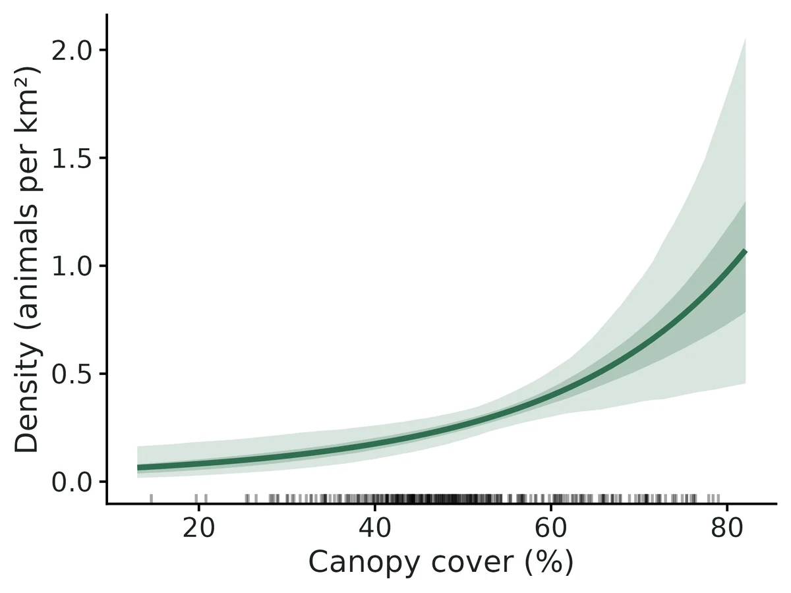
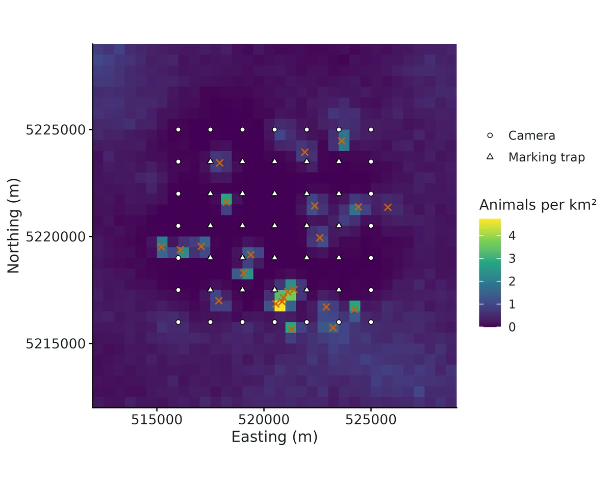
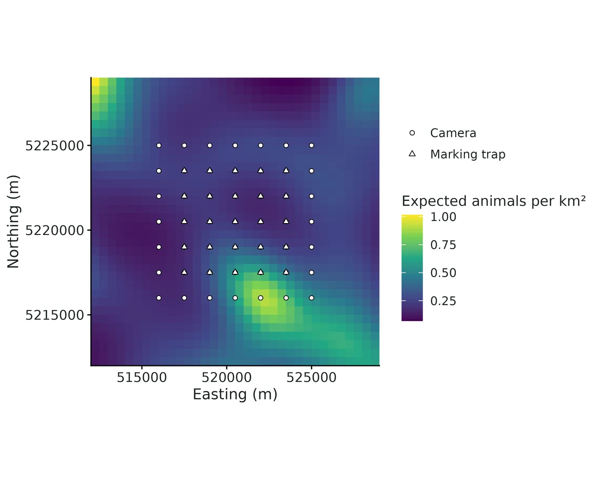
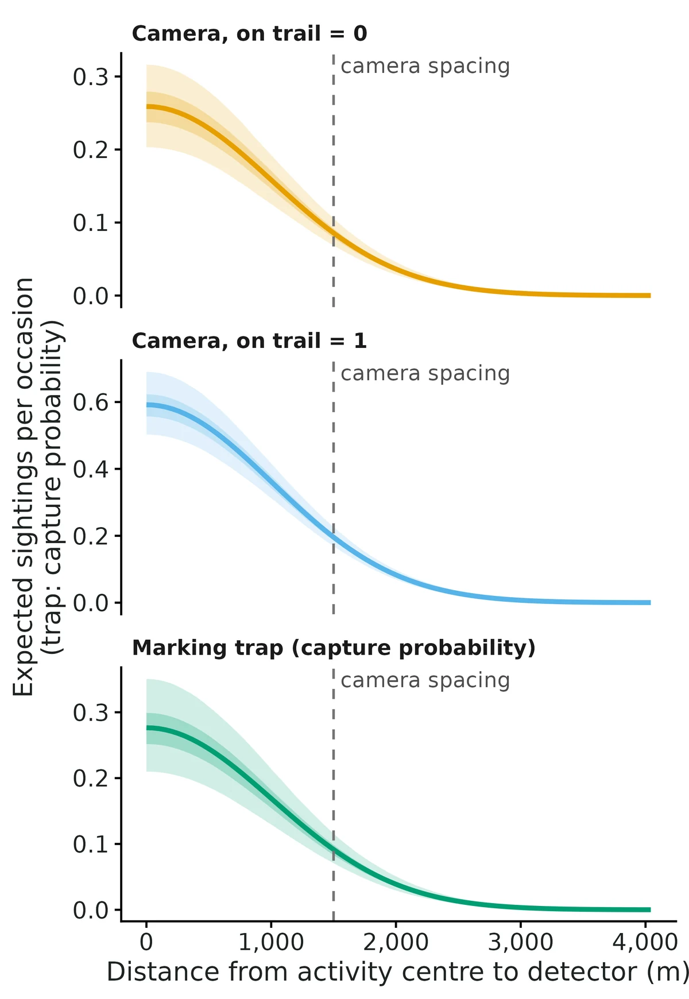

Spatial mark-resight (SMR) and generalized spatial mark-resight (gSMR)
How many animals live here, at what density, when only some of them can be recognised? Cameras photograph marked animals (whose identity is read from a collar, ear tag or natural mark) and unmarked animals (counted, but not identified). Spatial mark-resight (Chandler & Royle 2013; Sollmann et al. 2013) uses where each marked animal was resighted to learn how far animals range (sigma) and how often a camera records an animal, then uses the spatial pattern of the unmarked counts across cameras to estimate how many unmarked animals there are and where they live.
Is this the right analysis?
Use it when
Only part of the population carries individual marks (collars, ear tags, natural marks on a subset) and cameras (or other resighting detectors) photograph both marked and unmarked animals; question is density (per km2), abundance, the marked fraction, ranging scale (sigma) or habitat effects on density. Use gsmr when the animals were marked at their own traps during the study (live-trapping, darting at bait sites), so marked animals are concentrated near the marking sites; use smr when the marked animals are a random sample of the population (e.g. collared earlier across the whole area). Optional telemetry (GPS/VHF fixes) of marked animals.
Not for
Every animal individually identifiable (use scr), no marked animals at all (unmarked SCR / spatial count models; density is weakly identified), open populations across seasons (scr-open), mark loss or marks that change between sessions, animals that cannot be told marked vs unmarked on a photo at all.
The data you need
Camera CSV (id, x, y [, usage per occasion, camera covariates]); sightings CSV (camera, occasion, status marked / unmarked / marked-unidentified, animal ID for identified marks); either a list of marked animals (SMR) or the marking traps + marking captures (gSMR); optional telemetry CSV (animal ID, x, y); optional habitat grid CSV or raster with density covariates.
What the example's main data file looks like:
| camera_id | utm_e | utm_n | on_trail | weeks_active | bait | notes |
|---|---|---|---|---|---|---|
| FC01 | 516000 | 5216000 | 1 | 1111111111 | chicken + skunk lure | skid road / trail |
| FC02 | 517500 | 5216000 | 0 | 1111111111 | chicken + skunk lure | off-trail, bait tree |
| FC03 | 519000 | 5216000 | 0 | 1111111111 | chicken + skunk lure | off-trail, bait tree |
| FC04 | 520500 | 5216000 | 1 | 1111111111 | chicken + skunk lure | skid road / trail |
| FC05 | 522000 | 5216000 | 0 | 1111111111 | chicken + skunk lure | off-trail, bait tree |
Not sure? Use the finder to compare modules.
The worked example
Fisher density from ear tags and trail cameras: generalized spatial mark-resight (simulated data)
Fishers (Pekania pennanti) are mid-sized forest carnivores. A team wants to know how many fishers live in a block of managed forest in the western Oregon Cascades (UTM zone 10N), and whether more of them live where the canopy is dense.
The question: How many fishers live in the study area (density per km2 and abundance), does density rise with canopy cover, and do trail cameras photograph fishers more often, given that tagged fishers were caught only at box traps in the middle of the camera grid?
The data are simulated, so the true answer is known and the analysis can be checked against it.
What the researcher typed
I've put my fisher data in a folder: box-trap captures and trap locations from May, trail camera locations and a photo log from June to August, GPS fixes from 9 collared fishers, and a habitat grid with canopy cover. Some photos show a readable ear tag, some a tag we couldn't read, and most no tag. Please estimate fisher density and abundance, tell me whether density rises with canopy cover, and whether trail cameras get more photos. The box traps were only in the middle of the camera grid. Please check the method works for a design like mine before you trust it, and give me a report and figures I can use in a paper.
Run it yourself
Download the example data below and unzip it.
Open the unzipped folder in Claude Code (see Install).
Paste the prompt above. The agent checks the files, writes a plan, runs planted truth, fits the model and writes the report. You can compare your results with the ones below.
Contains cameras.csv, fisher_photos.csv, box_traps.csv, box_trap_captures.csv, gps_fixes.csv, habitat_grid.csv, the settings file (config.yaml), a description of the data and a step-by-step walkthrough.
Study design details
| model | gsmr |
|---|---|
| resight model | poisson |
| cameras | 49 |
| camera spacing m | 1500 |
| resight occasions weeks | 10 |
| cameras on trail | 24 |
| marking traps | 25 |
| marking spacing m | 1500 |
| marking occasions nights | 5 |
| marked animals | 23 |
| collared animals | 9 |
| gps fixes per collar | 30 |
| photo events | 360 |
| photos tag read | 194 |
| photos tag unreadable | 54 |
| photos no tag | 112 |
| mask pixels | 1156 |
| mask spacing m | 500 |
| state space km2 | 289 |
| buffer m | 4000 |
Results from the example data

What this means
- Density was estimated at 0.30 (95% CrI 0.24 to 0.38) fishers per km² (30.1 per 100 km2).
- Over the 289 km² state space (camera array plus buffer) that is 87.1 (95% CrI 68.0 to 109) fishers, of which the 23 marked animals are a fraction 0.27 (95% CrI 0.21 to 0.34).
- Sigma, the spatial scale of space use, was 1010 (95% CrI 966 to 1057) m: circular home range of 19 (95% CrI 18 to 21) km².
- Each 1 SD (12 units) higher canopy cover is associated with 64% higher density (rate ratio 1.6, 95% interval 1.2 to 2.2); expected density 0.15 per km² (0.082 to 0.24) at 36% canopy and 0.59 (0.36 to 0.87) at 69% canopy.
- This is an association between density and habitat across the state space, not proof that the habitat causes higher density.
- A camera on a trail multiplied the sighting rate by 2.3 (95% interval 1.8 to 3.0). This is a detection effect, not a difference in where animals live.
- Because marking was modelled, marked animals are not assumed to be a random sample: animals living near the marking traps are more likely to carry marks, and the model accounts for that (generalized SMR).
More figures



Figures are the module's default publication figures, reduced for the web. The report also saves them as PDF and full-resolution PNG.
Planted truth at the example's design
Before trusting the example's results, the module was run on many simulated data sets with the same design and known true values. Each row is one quantity: did the method get it back? (What the thresholds are.)
Every quantity checked passed planted truth at this design.
| This example | 49 cameras 1,500 m apart, 10 weekly occasions; 23 animals marked at 25 box traps (generalized SMR), 9 of them GPS-collared |
|---|---|
| Design the module was validated at | 49 cameras (7 x 7 grid, 1,500 m = 1.5 sigma apart), 10 weekly occasions, 20 randomly marked animals among about 73 |
The example matches the validated generalized SMR design (spatial mark-resight with the marking captures modelled): the same 49 cameras and 10 occasions, and marking at a central 5 x 5 box-trap grid over 5 nights (about 22 marked). That design passed all 10 estimands (abundance +4.5%, coverage 0.96). The example also adds GPS collars on 9 animals. Telemetry was tested on a harder design with only 5 marked animals, where it pinned down sigma and cut the abundance bias from +15.1% to +10.8%.
10 of 10 rows pass.
| Quantity | True value | Average estimate | Bias | Allowed bias | Coverage (needed) | Result |
|---|---|---|---|---|---|---|
| abundance | 73 | 76.1 | +4.2% | ±10.0% | 0.96 (0.885) | ✓ PASS |
| density_beta_canopy | 0.5 | 0.509 | +1.8% | ±10.9%† | 0.97 (0.885) | ✓ PASS |
| density_per_km2 | 0.253 | 0.263 | +4.2% | ±10.0% | 0.96 (0.885) | ✓ PASS |
| detection_beta_on_trail | 0.7 | 0.686 | -2.1% | ±10.0% | 0.91 (0.885) | ✓ PASS |
| home_range_area_95 | 18.8 | 18.9 | +0.2% | ±10.0% | 0.97 (0.885) | ✓ PASS |
| id_probability | 0.8 | 0.797 | -0.4% | ±10.0% | 0.93 (0.885) | ✓ PASS |
| marked_fraction | 0.302 | 0.295 | -2.4% | ±10.0% | 0.96 (0.885) | ✓ PASS |
| marking_detection | 0.3 | 0.308 | +2.6% | ±10.0% | 0.94 (0.885) | ✓ PASS |
| resight_rate | 0.3 | 0.309 | +3.0% | ±10.0% | 0.93 (0.885) | ✓ PASS |
| sigma | 1,000 | 1,000 | +0.0% | ±10.0% | 0.97 (0.885) | ✓ PASS |
Limits that matter
- Conventional SMR after spatially concentrated marking is badly biased (-31% N, coverage 0.10); the box-trap captures must be modelled (gSMR).
- Upward small-sample bias of +4-7% in N/density (posterior skew); +4.6% at this design, inside the gate.
- secr's joint gSMR fit was ~26% low in validation; use secr only to check sigma and detection rates.
- Not modelled: tag loss, misread tag status, individual heterogeneity in photo rate (e.g. collar effects), non-independent photo events, open populations.
- GPS fixes are assumed independent; autocorrelated data must be thinned.
- With <= 5 marked animals N is biased ~+15% and the gate fails; this design has 23.
- Only the Poisson resight model was validated at nsim = 100.
- Power to detect the canopy effect (beta = 0.5 per SD) is 0.77 at this design.
All known limits from the module's validation record
- Few marked animals (<= 5): posterior-mean N/density biased upward by ~15% (gate FAIL, section 5) though coverage is nominal; ~4-12% of fast-setting fits do not reach R-hat < 1.05. Telemetry on all 5 marked animals reduces the bias to +10.8% and gives 100% convergence, but still narrowly fails the gate (section 6). Mark more animals (section 7); run longer chains; report the interval rather than the point estimate.
- Conventional SMR after spatially concentrated marking is badly biased (-31% N, coverage 0.10; section 3). Supply the marking captures (gSMR) whenever marking happened at traps inside the study area.
- Upward small-sample bias of +4-7% in N/density at realistic designs (posterior mean of a skewed posterior), inside the gate.
- secr cross-check for gSMR: secr's joint marking + sighting fit was biased low (-26% N, coverage 0.60) on our gSMR simulations, while the Nimble gSMR was unbiased; the cause was not resolved (section 8). For gSMR, use secr only as a reference for sigma and detection rates; N was cross-checked against secr SCR on the marking captures alone.
- Status mis-scoring (marked animal recorded as unmarked), mark loss, individual heterogeneity in sighting rate (e.g. collar effects), non-independent photos, and open populations are not modelled. The posterior predictive "sightings per marked animal" check flags strong heterogeneity.
- The Bernoulli resight model uses the Poisson approximation of Chandler & Royle (2013) for pooled unmarked and unidentified counts; only the Poisson model was validated at nsim = 100 here.
- Telemetry fixes are assumed independent draws from the bivariate-normal space use around the activity centre; autocorrelated GPS data must be thinned.
- Unmarked-only data (no marked animals) are rejected: density from unmarked counts alone is weakly identified (Chandler & Royle 2013).
How this module was validated
- 100 simulated datasets per design, fitted with Nimble (3 chains x 9,000 iterations, 3,000 burn-in, thin 2). To pass, bias had to be within 10% (or 3 Monte Carlo SE) and coverage (how often the 95% interval contained the truth) at least 0.88.
- Default SMR design: all 9 estimands passed (abundance +5.1%, coverage 0.98; 98/100 converged). The generalized SMR design passed all 10 (100/100 converged).
- Harder design with only 5 marked animals out of about 41: abundance was +15.1% and failed the gate, although coverage was 0.95. Adding telemetry on all 5 marked animals brought this to +10.8%, which still narrowly failed.
- Negative control: when concentrated marking was ignored, abundance came out -31.3% with coverage 0.10. The gate failed, as it should.
- False-positive rate with no true effects: 0.02 for the density covariate and 0.04 for the detection covariate.
- Cross-check against secr on 48 datasets: abundance agreed (mean ratio 1.02). secr's joint generalized SMR fit was biased low (-25.8%), so for that design abundance was checked instead against secr SCR fitted to the marking captures alone.
- Power: the abundance interval narrowed from 80 to 30 animals as the number marked rose from 5 to 40, and power for the habitat effect reached 0.8 only at about 40 marked. A separate verifier agent with its own simulator got 9/9 for SMR, 9/10 for generalized SMR (marking-detection coverage 0.879 against a bound of 0.884), and a failing negative control.
Every run uses the acceptance gate described on the validation page. The full record follows, section by section, exactly as kept in the module's VALIDATION.md.
Settings and pass/fail rule used for every run
All recovery runs: bin/Rscript core/run.R recover scr-smr --config modules/scr-smr/validation/<cfg>.yaml --nsim 100 --cores 16 on njobvu (SLURM, 16 cores) with the module fast_settings (Nimble, custom joint s/z sampler + adaptive RW and RW_block on top-level parameters; 3 chains x 9,000 iterations, 3,000 burn-in, thin 2) unless stated. Raw results: results/scr-smr/recover_<label>/ (summary CSV, per-replicate CSV, HTML report).
Gate (core/R/recovery.R::recovery_gate, thresholds NOT changed): |bias| <= max(10% of truth, 3 MC SE) (truth 0: 0.1 x empirical SD); 95% interval coverage >= 0.95 - 3 MC SE (here 0.88); max R-hat < 1.05 in >= 90% of all replicates attempted. "conv" = replicates with max R-hat < 1.05 / 100.
Default design (module defaults, model: smr): 49 cameras (7 x 7 grid, 1,500 m = 1.5 sigma spacing), 10 weekly occasions, 10% of cameras fail part-way, half on trails; state space = cameras + 4,000 m buffer (289 km2, 500 m pixels); density 0.25 / km2 (~73 animals), 20 marked animals that are a random sample of the population (e.g. collared earlier), Poisson resighting lambda0 = 0.30 per week off-trail, on-trail log effect 0.7, sigma = 1,000 m, P(mark readable) delta = 0.8 (the rest recorded as "marked, unidentified"), canopy log-density effect 0.5 per SD.
Timing (selftest, 4 replicates): ~120-300 s per replicate including Nimble compile; a 100-replicate run takes 25-35 min on 16 cores. Median per-replicate time 198 s (default), 229 s (gSMR), 233 s (5 marked; one replicate needed the automatic M refit and took 88 min).
The Nimble warning "No samplers assigned for 1 node" in SMR runs is expected: the marking-phase parameter pm0 is unused (and its sampler removed) when marking is not modelled.
1. Recovery at the default design (SMR, nsim = 100) -- PASS
| estimand | truth | mean est | rel. bias | bias MC SE | RMSE | coverage | power |
|---|---|---|---|---|---|---|---|
| density_per_km2 | 0.253 | 0.265 | +5.1% | 0.0034 | 0.036 | 0.98 | |
| abundance | 73.0 | 76.6 | +5.1% | 1.00 | 10.4 | 0.98 | |
| marked_fraction | 0.278 | 0.273 | -1.4% | 0.0033 | 0.033 | 0.98 | |
| sigma (m) | 1000 | 1008 | +0.8% | 6.3 | 62 | 0.98 | |
| home_range_area_95 (km2) | 18.8 | 19.3 | +2.3% | 0.24 | 2.4 | 0.98 | |
| resight_rate (lambda0) | 0.300 | 0.303 | +0.9% | 0.0051 | 0.050 | 0.97 | |
| id_probability (delta) | 0.800 | 0.795 | -0.7% | 0.0046 | 0.045 | 0.94 | |
| density_beta_canopy | 0.50 | 0.53 | +5.4% | 0.018 | 0.18 | 0.95 | 0.87 |
| detection_beta_on_trail | 0.70 | 0.71 | +2.0% | 0.013 | 0.12 | 0.99 | 1.00 |
Gate: all 9 estimands PASS; conv 98/100; 0 failures. The +5% upward bias in N/density is the usual small-sample bias of the posterior mean of a right-skewed posterior (the scr module shows the same +4.6%).
2. Generalized SMR -- PASS
Same population and cameras, but the marked animals are those caught in 5 nights at a 5 x 5 box-trap grid (1,500 m spacing) in the centre of the camera grid (pm0 = 0.3), so marked animals are concentrated in the centre (mean ~22 marked). Fitted with model: gsmr (marking captures modelled jointly).
| estimand | truth | mean est | rel. bias | bias MC SE | RMSE | coverage | power |
|---|---|---|---|---|---|---|---|
| density_per_km2 | 0.253 | 0.263 | +4.5% | 0.0031 | 0.033 | 0.96 | |
| abundance | 73.0 | 76.0 | +4.5% | 0.90 | 9.5 | 0.96 | |
| marked_fraction | 0.302 | 0.296 | -1.3% | 0.0035 | 0.036 | 0.96 | |
| marking_detection (pm0) | 0.300 | 0.308 | +2.5% | 0.0042 | 0.042 | 0.94 | |
| sigma (m) | 1000 | 1002 | +0.2% | 3.6 | 35 | 0.94 | |
| home_range_area_95 (km2) | 18.8 | 19.0 | +0.7% | 0.13 | 1.3 | 0.94 | |
| resight_rate | 0.300 | 0.310 | +3.3% | 0.0044 | 0.044 | 0.89 | |
| id_probability | 0.800 | 0.797 | -0.4% | 0.0030 | 0.030 | 0.93 | |
| density_beta_canopy | 0.50 | 0.51 | +1.5% | 0.018 | 0.18 | 0.96 | 0.79 |
| detection_beta_on_trail | 0.70 | 0.68 | -2.3% | 0.016 | 0.16 | 0.90 | 1.00 |
Gate: all 10 PASS; conv 100/100. (resight_rate coverage 0.89 is just above the 0.885 bound.)
3. Negative control: ignoring a spatially concentrated marking process -- FAILS, as it should
neg_ignore_marking.yaml: the same gSMR data-generating design as section 2 (marking concentrated at the central box traps), fitted with conventional SMR (settings: model: smr), i.e. marked animals treated as a random sample.
| estimand | truth | mean est | rel. bias | coverage | gate |
|---|---|---|---|---|---|
| density_per_km2 | 0.253 | 0.173 | -31.3% | 0.10 | FAIL |
| abundance | 73.0 | 50.1 | -31.3% | 0.10 | FAIL |
| marked_fraction | 0.302 | 0.449 | +49.7% | 0.10 | FAIL |
| density_beta_canopy | 0.50 | 0.49 | -1.4% | 0.84 | FAIL (coverage) |
| detection_beta_on_trail | 0.70 | 0.67 | -4.3% | 0.86 | FAIL (coverage) |
| sigma, home range, lambda0, delta | +1 to +8% | 0.90-0.93 | PASS |
The marked animals live where the cameras see them best, so SMR thinks a larger share of the population is marked and underestimates N by a third, with confidently wrong intervals (coverage 10%). Section 2 shows gSMR on the same design removes the bias (+4.5%, coverage 0.96). This reproduces the direction of Whittington et al. (2018): conventional SMR 7.4 vs gSMR 12.4 grizzlies / 1000 km2 when marking was concentrated. The gate can fail.
4. False-positive rate with no effects -- PASS
Default SMR design with density_beta_canopy = 0 and detection_beta_on_trail = 0.
| estimand | truth | mean est | bias | coverage | "power" = false-positive rate |
|---|---|---|---|---|---|
| density_beta_canopy | 0 | -0.001 | -0.001 | 0.98 | 0.02 |
| detection_beta_on_trail | 0 | -0.033 | -0.033 | 0.96 | 0.04 |
| density_per_km2 | 0.253 | 0.269 | +6.7% | 0.97 | |
| abundance | 73.0 | 77.7 | +6.7% | 0.97 | |
| sigma | 1000 | 1000 | 0.0% | 0.94 |
Both false-positive rates (95% interval excludes 0) are at or below the nominal 5%. All 9 estimands PASS; conv 100/100.
5. Harder design: 5 marked animals of ~41 -- FAIL on N/density bias (documented limit)
Density 0.14 / km2 (~41 animals), only 5 marked (random sample), otherwise default.
| estimand | truth | mean est | rel. bias | bias MC SE | RMSE | coverage | gate |
|---|---|---|---|---|---|---|---|
| density_per_km2 | 0.142 | 0.162 | +15.1% | 0.0043 | 0.046 | 0.95 | FAIL (bias) |
| abundance | 41.1 | 46.7 | +15.1% | 1.24 | 13.3 | 0.95 | FAIL (bias) |
| marked_fraction | 0.124 | 0.122 | -0.8% | 0.0031 | 0.030 | 0.95 | PASS |
| sigma (m) | 1000 | 1008 | +0.8% | 9.9 | 97 | 0.96 | PASS |
| resight_rate | 0.300 | 0.317 | +5.6% | 0.0089 | 0.089 | 0.93 | PASS |
| id_probability | 0.800 | 0.780 | -2.5% | 0.0083 | 0.083 | 0.94 | PASS |
| density_beta_canopy | 0.50 | 0.54 | +7.2% | 0.026 | 0.26 | 0.96 | PASS (power 0.54) |
| detection_beta_on_trail | 0.70 | 0.66 | -5.2% | 0.022 | 0.22 | 0.93 | PASS (power 0.88) |
conv 96/100 (one replicate: posterior of N 111-957, R-hat 1.48, after the automatic M refit). Coverage stays nominal (0.95) but the posterior mean of N is 15% high (median error +4 animals): with 5 marked animals lambda0 and sigma rest on 5 individuals, the posterior of N is long right-tailed, and the mean is pulled up. Intervals are wide (mean 95% width 49 animals for N = 41). Treat point estimates from <= 5 marked animals as rough and report the interval. See section 6 for the remedy with telemetry and section 7 for how the bias shrinks with more marked animals.
6. Harder design + telemetry remedy -- improves, still FAILS N bias narrowly (documented limit)
Same design as section 5 (density 0.14 / km2, ~41 animals, 5 randomly marked), but all 5 marked animals carry GPS collars contributing 30 independent fixes each (bivariate normal around the activity centre with the same sigma; Sollmann et al. 2013), fitted jointly.
| estimand | truth | mean est | rel. bias | bias MC SE | RMSE | coverage | gate |
|---|---|---|---|---|---|---|---|
| density_per_km2 | 0.143 | 0.157 | +10.8% | 0.0030 | 0.033 | 0.99 | FAIL (bias, marginal) |
| abundance | 41.2 | 45.4 | +10.8% | 0.87 | 9.7 | 0.99 | FAIL (bias, marginal) |
| marked_fraction | 0.124 | 0.122 | -1.0% | 0.0027 | 0.027 | 0.99 | PASS |
| sigma (m) | 1000 | 999 | -0.1% | 3.3 | 33 | 0.99 | PASS |
| home_range_area_95 (km2) | 18.8 | 18.8 | 0.0% | 0.12 | 1.2 | 0.99 | PASS |
| resight_rate | 0.300 | 0.312 | +3.9% | 0.0069 | 0.070 | 0.96 | PASS |
| id_probability | 0.800 | 0.779 | -2.7% | 0.0084 | 0.086 | 0.96 | PASS |
| density_beta_canopy | 0.50 | 0.50 | +0.8% | 0.024 | 0.24 | 0.95 | PASS (power 0.59) |
| detection_beta_on_trail | 0.70 | 0.66 | -5.2% | 0.021 | 0.21 | 0.93 | PASS (power 0.89) |
conv 100/100 (vs 96/100 without telemetry). Telemetry fixes sigma almost exactly (RMSE 33 m vs 97 m without telemetry), which removes most of the long right tail of N: RMSE of N falls from 13.3 to 9.7 animals, the 95% interval narrows from 49 to 41 animals, the median error falls from +4.2 to +3.0 animals, and the relative bias of the posterior mean falls from +15.1% to +10.8%. This is still just outside the gate (|bias| 4.2 animals vs the allowed max(10% of truth = 4.1, 3 MC SE = 2.6)), so this design stays a documented limit: telemetry helps substantially but does not fully fix the point estimate with only 5 marked animals. The remaining bias comes from the sighting rate lambda0 and the unmarked counts, which telemetry does not inform. Coverage (0.99) is conservative.
7. Power / design: number of marked animals
bin/Rscript core/run.R power scr-smr --config modules/scr-smr/validation/power_n_marked.yaml --vary n_marked=5,10,20,40 --nsim 50 --cores 16 --out results/scr-smr/power_n_marked (default SMR design, density 0.25 / km2, ~73 animals). Rows with R-hat >= 1.05 excluded (44/50 converged at 5 and 10 marked; 50/50 at 20 and 40).
| marked animals | N rel. bias | N coverage | N 95% width | sigma coverage | canopy-effect power |
|---|---|---|---|---|---|
| 5 | +7.6% | 0.86 | 80 | 0.93 | 0.66 |
| 10 | +9.2% | 1.00 | 66 | 0.95 | 0.80 |
| 20 | +6.4% | 0.98 | 44 | 0.94 | 0.76 |
| 40 | +4.3% | 0.92 | 30 | 0.94 | 0.90 |
Precision of N improves steeply with the number of marked animals (interval width 80 -> 30 animals from 5 to 40 marked); marking 20+ animals (about a quarter of the population) gives intervals under +-30%. With 5 marked animals coverage of N drops to 0.86 and 12% of fits do not converge in the fast settings, so longer runs are needed. Power for a 0.5-per-SD habitat effect on density reaches 0.8 only at about 40 marked animals.
8. Cross-check against an independent implementation (secr)
SMR (dev/scr-smr/crosscheck.R smr 48 16; 48 default-design datasets, each fitted by the Nimble engine and by secr 5.5.1 maximum pseudo-likelihood mark-resight, Efford & Hunter 2018; sighting-only occasions, knownmarks, Poisson counts, pID, c-hat by 50 simulations). Results in results/scr-smr/crosscheck/crosscheck_smr*.csv.
| estimand | Nimble rel. bias / coverage | secr rel. bias / coverage | paired cor | mean ratio Nimble/secr |
|---|---|---|---|---|
| abundance | +1.5% / 0.94 | -0.1% / 1.00 | 0.87 | 1.02 |
| density_per_km2 | +1.5% / 0.94 | -0.1% / 1.00 | 0.87 | 1.02 |
| marked_fraction | +3.3% / 0.94 | +2.6% / 1.00 | 0.83 | 1.01 |
| sigma | +0.1% / 0.92 | +3.6% / 0.90 | 0.81 | 0.97 |
| id_probability | -0.9% / 0.94 | -0.0% / 0.85 | 0.70 | 0.99 |
| resight_rate | +4.4% / 0.96 | -13.0% / 0.83 | 0.66 | 1.22 |
| density_beta_canopy | +8.6% / 0.96 | -25.4% / 0.96 | 0.71 | 1.26 |
The two implementations agree on N, density, marked fraction and sigma (mean ratio 0.97-1.02, correlation 0.81-0.87). secr's intervals for N are wider (60 vs 41 animals) because its pseudo-likelihood treats the unmarked counts as independent Poisson counts with an overdispersion inflation; secr's camera covariate is on the logit scale of g0 (not comparable to the Bayesian log scale), and its density-covariate coefficient is attenuated (-25%), as expected when only marked animals and the total unmarked count inform the density surface.
gSMR: 48 gSMR datasets (default population, marking at the central 5 x 5 box-trap grid; dev/scr-smr/crosscheck.R gsmr 48 16, then dev/scr-smr/t_secr_gsmr2.R). Results: results/scr-smr/crosscheck/crosscheck_gsmr*.csv.
(a) secr joint marking + sighting fit (sighting-only occasions after proximity marking occasions, markocc, knownmarks, g0 ~ ts + camera covariates, pID). This fit was biased low against the truth on these data, while the Nimble gSMR was not:
| estimand | Nimble rel. bias / coverage | secr joint rel. bias / coverage | paired cor | mean ratio Nimble/secr |
|---|---|---|---|---|
| abundance | +0.0% / 0.92 | -25.8% / 0.60 | 0.81 | 1.38 |
| marked_fraction | +4.0% / 0.92 | +41% / 0.60 | 0.90 | 0.75 |
| sigma | +0.4% / 0.85 | +2.1% / 0.88 | 0.91 | 0.98 |
| home_range_area_95 | +1.1% / 0.85 | +4.6% / 0.88 | 0.91 | 0.97 |
| marking_detection (pm0) | +1.9% / 0.92 | -4.1% / 0.81 | 0.89 | 1.08 |
| resight_rate | +0.1% / 0.88 | -2.8% / 0.96 | 0.90 | 1.03 |
The two implementations agree on the detection parameters (sigma, home range, marking and resighting rates: mean ratio 0.97-1.08, correlation 0.89-0.91) but not on N. Diagnosis on 12 datasets (logs/scr-smr_secr_gsmr_diag*.log): secr fitted to the marking captures alone gives N/N_true ~ 0.97 (median); adding the unmarked counts Tu gives 0.85 and adding Tu + Tm gives 0.69, with or without the density covariate. So the downward bias enters through secr's pseudo-likelihood for the pooled sighting counts when marking is spatially concentrated (or through how we pass those data to secr; we did not find an error). We did not resolve which; secr's joint gSMR fit is therefore not used as a reference, and in a gSMR fit the module's engine-comparison figure flags this.
(b) Independent check of N: secr conventional SCR on the marking captures only (box-trap data, no camera data; a different likelihood that is unbiased by construction but less precise), same 48 datasets:
| rel. bias of N (mean) | median rel. error | coverage | mean 95% width | |
|---|---|---|---|---|
| Nimble gSMR (all data) | +0.0% | 0.92 | 37 animals | |
| secr SCR, marking captures only | +10.2% | +3.9% | 0.94 | 107 animals |
Both are consistent with the truth (secr's mean is pulled up by a few datasets with < 12 marked animals and very wide intervals); the median ratio Nimble / secr-marking-only is 0.93 and the correlation is 0.42 (low because the marking-only estimate is so noisy). Using the camera data in gSMR cuts the interval width about three-fold without introducing bias.
Independent verification (2026-10-20, separate verifier agent)
Literature / code review. Checked R/nimble_engine.R line by line against Chandler & Royle 2013 (identified sightings Pois(K delta lam_ij); unmarked counts pooled Pois(K sum_i z_i (1 - mk_i) lam_ij), exact by Poisson superposition), Jimenez et al. 2019 (marked-unidentified counts with expectation (1 - delta) times the summed marked rates), Sollmann et al. 2013 (telemetry N(s_i, sigma^2 I), same sigma; sufficient-statistic likelihood correct) and Whittington et al. 2018 (gSMR: every augmented row has psi and a binomial proximity marking likelihood, (1 - p)^K for never-caught rows). SMR fixes z = 1 for the m marked rows (N = m + Bin(M - m, psi)). The joint s/z sampler's z flip uses the correct prior ratio for the uniform pseudo-prior on s when z = 0. Density covariates are standardised over the mask, detection covariates over cameras. simulate() and fit() share no code apart from the data structure.
Independent planted truth (own simulator dev/scr-smr/verify/vsim.R, no module code; continuous-space rejection sampling of activity centres on a 13 x 11 km state space, a continuous elevation surface, 48 jittered cameras with random 15% outages, K = 8, a continuous distance-to-road camera covariate, D = 0.6 / km2 (~86 animals), sigma = 700 m, lambda0 = 0.5, delta = 0.65, telemetry on 5 animals; gSMR uses an off-centre 4 x 4 box-trap grid at 900 m, 4 nights, pm0 = 0.25, ~9.5 marked animals). The module's fit() uses fast_settings and the core summarise_recovery / recovery_gate. Driver: dev/scr-smr/verify/vrun.R. Results: results/scr-smr/verify/indep_*.
| scenario (nsim = 100) | N rel. bias | N coverage | other estimands | gate |
|---|---|---|---|---|
| SMR, 15 random marks | +6.3% | 0.97 | all within bias / coverage limits | PASS (9/9), conv 99/100 |
| gSMR | +6.3% | 0.98 | 9/10 pass; marking_detection coverage 0.879 vs bound 0.884 (bias +4.9%, 6 misses high and 6 low, all with m <= 9 marked) | FAIL on pm0 coverage only, conv 99/100 |
| null (both effects 0) | +9.7% | 0.90 | false-positive rates 0.08 (density) and 0.04 (detection) | PASS |
| negative control: gSMR data fitted as SMR | -17.0% | 0.76 | marked fraction +28%, coverage 0.76 | FAILS, as it should |
The builder's default recovery was rerun (results/scr-smr/verify/rerun_default) and reproduced the reported numbers (N +5.1%, coverage 0.98, all PASS). The other builder summaries (gSMR, negative control, null, hard designs) were checked against their CSVs and match VALIDATION.md.
Two more runs with the same simulator were launched to test whether the pm0 under-coverage is real: a second gSMR batch with disjoint seeds (indep_gsmr2) and the Bernoulli resight model, lambda0 = p0 = 0.2 (indep_bern). They had not finished when this section was written; read results/scr-smr/verify/indep_gsmr2/summary.csv and indep_bern/summary.csv (logs logs/scr-smr_verify_{gsmr2,bern}.log).
Usability. Messy example variants (dev/scr-smr/verify/messy/a-f) had an NA covariate, a missing coordinate, an unknown status, an empty animal ID, wrong column names, misspelled camera and trap IDs, and IDs not in the marked list. Fixed: check_data() crashed ("missing value where TRUE/FALSE needed") when a camera had a missing coordinate. The camera-outside-mask test now skips cameras without coordinates. read_data() now also gives a clear "file not found" message and no longer emits a spurious colClasses warning when the usage column is misnamed. All variants now give clear, actionable messages. The example report's interpretation sentences were checked against the estimates table (density, N, marked fraction, sigma, 2,471 m radius, rates, rate ratios, and the 10th and 90th percentile densities, recomputed independently): all correct, with associative wording and detection kept separate from density. All required scr-family figures are present, and the PNGs were inspected with no defects found. The example-report HTML still embeds the engine-comparison figure drawn before the builder's last tick-label fix (builder's own note). Refresh it with bin/Rscript core/run.R fit scr-smr --config modules/scr-smr/example/config.yaml --out results/scr-smr/example.
Engine, references and full details
Engine: nimble (Bayesian data augmentation with latent activity centres; default) and secr (maximum pseudo-likelihood mark-resight; independent cross-check).
References
- Chandler RB, Royle JA (2013) Spatially explicit models for inference about density in unmarked or partially marked populations. Annals of Applied Statistics 7:936-954. doi:10.1214/12-AOAS610
- Sollmann R, Gardner B, Parsons AW, Stocking JJ, McClintock BT, Simons TR, Pollock KH, O'Connell AF (2013) A spatial mark-resight model augmented with telemetry data. Ecology 94:553-559. doi:10.1890/12-1256.1
- Whittington J, Hebblewhite M, Chandler RB (2018) Generalized spatial mark-resight models with an application to grizzly bears. Journal of Applied Ecology 55:157-168. doi:10.1111/1365-2664.12954
- Jimenez J, Chandler R, Tobajas J, Descalzo E, Mateo R, Ferreras P (2019) Generalized spatial mark-resight models with incomplete identification: an application to red fox density estimates. Ecology and Evolution 9:4739-4748. doi:10.1002/ece3.5077 (corrigendum: use sum(), not dsum(), in JAGS)
- Efford MG, Hunter CM (2018) Spatial capture-mark-resight estimation of animal population density. Biometrics 74:411-420. doi:10.1111/biom.12766
- Efford MG (2025) Mark-resight in secr 5.2 (package vignette secr-markresight.pdf); secr R package.
- Royle JA, Chandler RB, Sollmann R, Gardner B (2014) Spatial Capture-Recapture. Academic Press (ch. 18 unmarked populations, ch. 19 spatial mark-resight).
- Royle JA, Dorazio RM (2012) Parameter-expanded data augmentation for Bayesian analysis of capture-recapture models. Journal of Ornithology 152(Suppl 2):S521-S537.
- Sun CC, Fuller AK, Royle JA (2014) Trap configuration and spacing influences parameter estimates in spatial capture-recapture models. PLoS ONE 9:e88025.
- de Valpine P et al. (2017) Programming with models: writing statistical algorithms for general model structures with NIMBLE. JCGS 26:403-413.